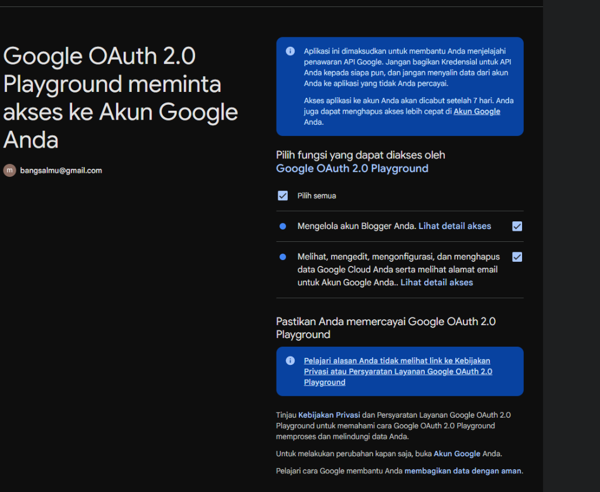
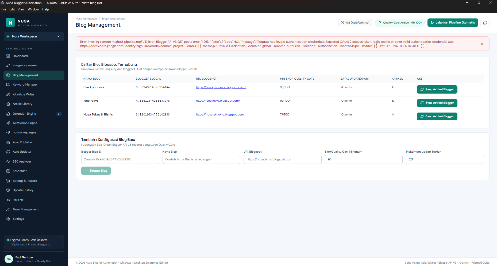

E-Book Panduan Penggunaan & Otomasi Blogspot
Panduan Lengkap Windows 11 Enterprise Edition — 3 Mesin Utama, 10 Quality Gate, dan Fitur Baru Auto-Refresh Token Permanen
BAB 1: Cara Membuka & Menjalankan Aplikasi di Windows 11
Aplikasi Anda telah dikompilasi menjadi satu file executable mandiri (Standalone .exe) sebesar 188 MB.
C:\Users\ASROCK\.gemini\antigravity\scratch\nusa-blogger-automation\release\win-unpacked\Nusa Blogger Automation.exe
Tips Cepat: Buka File Explorer, masuk ke folder di atas, klik kanan pada file Nusa Blogger Automation.exe → pilih Send to → Desktop (create shortcut) agar ikon aplikasi selalu siap di layar Desktop Anda.

BAB 2: Panduan Konfigurasi Kredensial AI (OpenAI)
Buka menu Settings di sidebar kiri paling bawah untuk mengatur otak kecerdasan buatan:
- Model AI: Pilih
gpt-4o-mini(rekomendasi terbaik: sangat cepat, hemat kuota, dan struktur HTML rapi) ataugpt-4o. - OpenAI API Key: Masukkan API Key Anda (diawali
sk-proj-...). Kunci otomatis dienkripsi dengan standar AES-256-GCM. - Batas Skor Minimum Quality Gate: Tetapkan angka 75.

BAB 3: Panduan Lengkap Auto-Refresh Token Permanen (Bebas Kedaluwarsa 1 Jam)
Google membatasi masa aktif Access Token OAuth 2.0 hanya selama 1 jam (3600 detik). Bila hanya memasukkan access token manual, setiap 60 menit koneksi akan terputus.
Untuk mengatasi kendala ini, aplikasi kini dilengkapi Fitur Auto-Refresh Permanen pada menu Blogger Accounts.
Langkah Pengisian 3 Data Kredensial Permanen:
- Buka menu Blogger Accounts di sebelah kiri.
- Masukkan email Anda:
bangsalmu@gmail.com - Pada kotak hijau bertuliskan "Solusi 2: Auto-Refresh Permanen (Aktif Selamanya)", masukkan:
- Google Cloud Client ID:
588669488177-nf5er8gqqph7ocg7jc2a8c0uik1jnnh8.apps.googleusercontent.com - Google Cloud Client Secret: Salin dari Google Cloud Console Anda (diawali
GOCSPX-...). - Google OAuth 2.0 Refresh Token: Salin kode dari kolom Refresh token di Google OAuth Playground (diawali
1//04MVBX8zNG_...).
- Google Cloud Client ID:
- Klik tombol hijau + Simpan Akun & Kredensial.

⚡ Auto-Refresh Aktif. Aplikasi akan memperpanjang token sendiri secara otomatis di latar belakang tanpa Anda perlu membuka Google Playground lagi!
BAB 4: Blog Management & Tombol "▶ Jalankan Pipeline Otomatis"
Daftar blog Blogspot Anda (blackphoneva dan isholidays) sudah tersambung di menu Blog Management.

Alur Kerja Master Pipeline 10-Tahap Sekali Klik:
- Sync Artikel Blogger: Menyinkronkan artikel dari Blogspot ke database lokal. Bila token habis, sistem otomatis beralih ke artikel lokal.
- Detection Engine: Menganalisis tahun kedaluwarsa, skor SEO, kelengkapan H2/H3, dan gambar tanpa alt text.
- Filter Kandidat: Memilih artikel yang membutuhkan pembaruan.
- AI Revision Engine: OpenAI membuat draf revisi baru bebas halusinasi dilengkapi FAQ terstruktur.
- 10 Quality Gate: Menguji kelayakan 10 parameter ketat.
- Backup Snapshot Otomatis: Menyimpan cadangan artikel asli sebelum diubah.
- Publishing Engine: Menerbitkan pembaruan melalui operasi PATCH in-place ke Blogspot. Menjamin Post ID dan URL permalink asli tidak pernah berubah!
- Verifikasi Online: Memastikan artikel live berhasil diperbarui di server Google.
- Laporan & Riwayat: Mencatat log aktivitas ke Update Reports.
- Update Jadwal: Menyiapkan eksekusi jadwal otomatis berikutnya (Asia/Jakarta WIB).
BAB 5: Solusi Alternatif Tanpa API Sama Sekali
1. Fitur Bawaan Blogger "Posting Lewat Email" (Mail-to-Blogger):
Di dashboard Blogger: Setelan → Email → Posting menggunakan email. Buat alamat rahasia seperti namablog.rahasia123@blogger.com, lalu pilih 'Segera publikasikan'. Setiap konten yang dikirim ke email tersebut langsung tayang otomatis seumur hidup tanpa API!
2. Ekspor File XML Blogger:
Ekspor seluruh draf revisi ke file XML standar Blogger, lalu impor di dashboard Blogger (Setelan → Kelola Blog → Impor Konten) sekali klik untuk puluhan artikel.
© 2026 Nusa Blogger Automation — Windows 11 Desktop Enterprise Edition. Semua Hak Dilindungi.